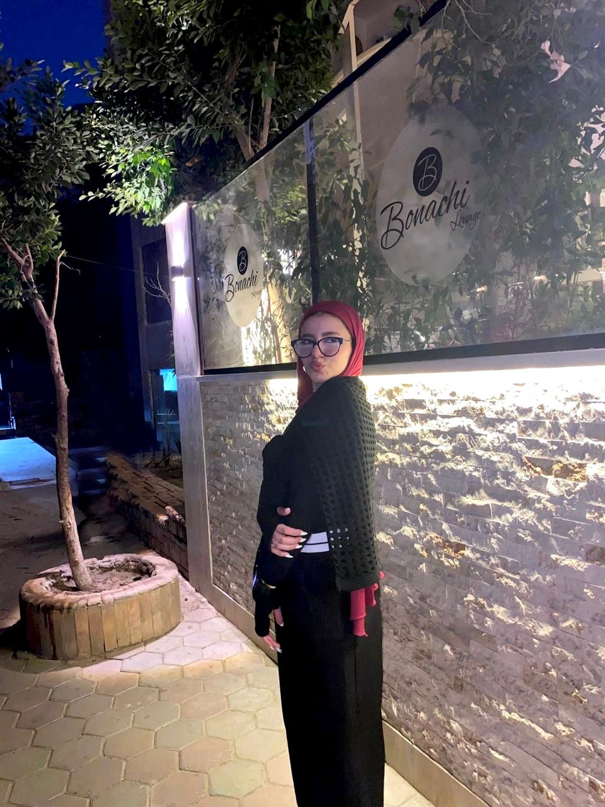

Full-Stack Developer specializing in building robust web applications with Java, C++, and modern database systems.
Explore My Work
I am a passionate computer science student dedicated to solving complex problems through clean, efficient code. I love building bridges between strong backend architectural logic and intuitive frontend layouts.